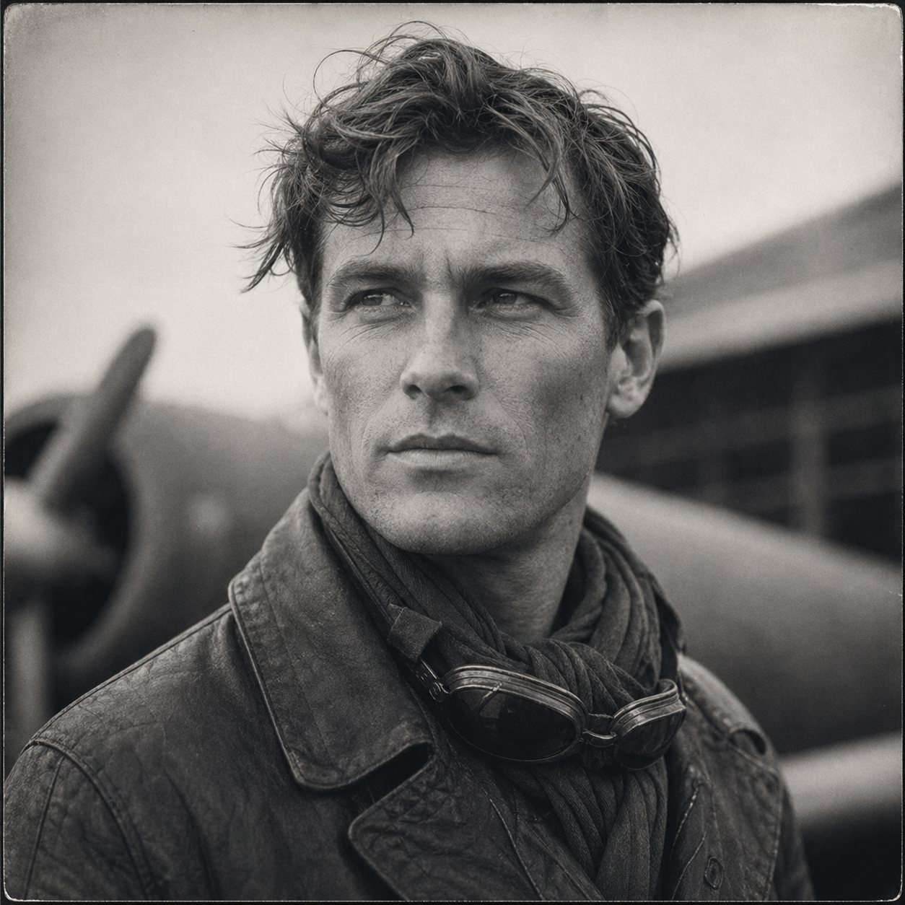

Julian Cross
(375 Points)
Male; Age 34; 6'0", 170 lbs; Lean, weathered flyer in worn field clothes and a leather jacket gone soft at the seams. Oil under the nails, sun in the face, and the look of a man who trusts machines only after listening to them for a while.
| ST: 13/14 [30] | IQ: 14 [45] | Speed: 7.75 |
| DX: 16 [80] | HT: 15/16 [60] | Move: 7 |
| Dodge: 8 |
Advantages
Absolute Direction [5]; Alertness +1 [5]; Ambidexterity [10]; Combat Reflexes [15] (Fright Check: 18); Danger Sense [15]; Eidetic Memory 1 [30]; Fit [5] (HT: +1; Fatigue Loss: Normal; Fatigue Recovery: Double Rate); High Pain Threshold [10]; Intuition [15]; Lang: Cantonese (Native Speak/Native Write) [6]; Lang: English (Native) [0]; Lang: French (Accented Spoken/Accented Written) [4]; Lang: Spanish (Accented Spoken/Accented Written) [4]; Lang: Swahili (Accented Spoken/Accented Written) [4]; Less Sleep 5 [15] (Sleep: -5 hours); Luck [30]; Patron (Followers of the Right Hand) (15 or less) [60] (Equipment: Standard, +5; Special Qualities (Access to Magic in Non-magical World): Very Unusual, +10; Secret: -5; Subtraction (Minimal Intervention): -5); Patron (Freemasons) (9 or less) [10]; Perfect Balance [15] (DX+6 on slippery surfaces. DX+4 to keep on feet in combat); Strong Will +2 [8] (Will: 16).
Disadvantages
Curious [-10] (Roll: IQ-2); Duty (15 or less) [-25] (Involuntary: -5; Subtraction (Extremely Hazardous): -5); Enemy (Unknown Enemies of FRH) [-60] (Unknown: -5; Subtraction (Access to Magic in Non-magical World): -15); Obsession 2 (Finish the route and see what lies beyond the map) [-10]; Secret (Patron (Freemasons)) [-5]; Secret (Unexplained occult aviation powers) [-20]; Weirdness Magnet [-15].
Quirks
Calls any aircraft that got him down alive a good girl; Can price spare wire and bad whiskey at a glance; Hates passengers who talk during bad weather; Keeps old telegrams folded in the flight jacket; Never trusts a fuel gauge until he checks it twice. [-5]Skills
Cartography/TL6-14 [1]; Driving/TL6 (Automobile)-15 [1]; Escape-15 [2]; First Aid/TL6-14 [½]; Guns/TL6 (Pistol)-15 [0]; Holdout-14 [1]; Leadership-14 [1]; Mathematics-14 [2]; Mechanic/TL6 (Automobile)-14 [1]; Merchant-17 [4]; Navigation/TL6-18* [3]; Orienteering-17 [4]; Piloting/TL6 (Single-Engine Prop)-19* [8]; Research-16 [3]; Scrounging-17 [3]; Streetwise-14 [1]; Survival (Woodlands)-13 [½].
*Cost modifiers: Absolute Direction, Perfect Balance.
Description
Julian Cross became a pilot the hard way, which is to say he became a working man in a trade that kills the merely enthusiastic and keeps the ones who can improvise under pressure. He carried mail, passengers, spare parts, luxuries, bad ideas, and other people's urgency across places where maps lie, weather kills, and infrastructure is more rumor than promise. He learned the feel of weak engines, bad fuel, rough landings, and routes that only exist because someone stubborn enough keeps flying them. By the time FRH found him, he was already the sort of man who could receive a telegram in Africa after coming in from the bush and immediately begin calculating freight, weather, timing, repairs, and the least impossible way to get himself and his machine back into the wider world.That is why Julian matters. He is not a national-symbol aviator or a romantic hero in goggles. He is a route-runner. He changes what a party can reach, how quickly it can move, and which edges of the map stop being theoretical. His usefulness comes not only from piloting but from the whole hard-travel shelf around it: negotiation, scavenging, parts-hunting, field repairs, navigation, and the calm understanding that a machine only trusts you after you have listened to it long enough. He is a logistics breaker in a setting where distance, bad roads, and uncertain rail can decide whether a case remains local or becomes impossible.
The occult layer sits on top of that human competence instead of replacing it. Julian has unexplained aviation gifts and hidden Masonic ties, but those truths only sharpen the working pilot already in motion. He is not a mystic of the air. He is a man who knows routes, risk, and the way the sky can suddenly stop pretending to be neutral. His powers should always feel stranger than comfortable and more private than boastful, the sort of thing a flyer would hide for the same reason he hides a hairline crack in a strut until he knows whether the whole machine can survive it.
For a new player, Julian should feel like the man who can get you there if the plane holds and the sky allows it. He is practical before he is glamorous, dangerous because he is excellent, and most himself when he is half mechanic, half negotiator, and fully committed to moving people and truths through places the rest of the world still treats as blank space.